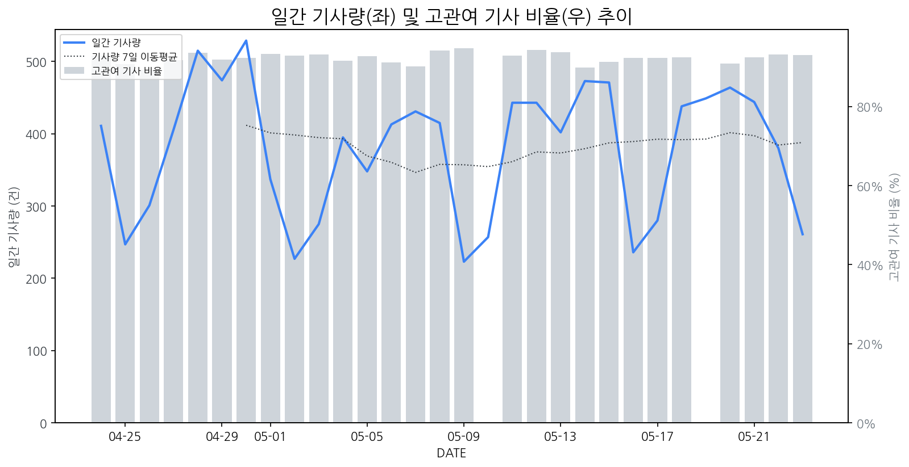

1
시장 활동 지표
기사량 추세 & 이상 징후 탐지
시장의 '전체 기사량'이 평소보다 비정상적으로 급증했는지(Spike)를 차트로 확인하고, LLM이 분석한 급등의 핵심 원인을 파악할 수 있음

고관여 기사란? 산업 연관 키워드로 수집된 기사들 중 디스플레이 키워드에 가중치를 반영하여 도출된 관련성 높은 기사
수집된 기사 수 (2026-05-23)
261
+11% WoW
기사량 변동 수준 (7일 이동평균 대비)
±6.7% 이하
2
오늘의 키워드
급격한 관심 ↑, 주목해야 할 키워드
금일 유의미한 급등 신호는 포착되지 않았습니다.
3
실시간 Risk 키워드
경계해야 할 시그널 탐지
특정 토픽의 부정 감성 점수가 급등할 때 이를 즉시 탐지하고, "근거 기사" 링크를 통해 리스크의 실체를 빠르게 파악할 수 있음
키워드 분석 결과, 오늘은 걱정할 만한 하락 신호가 없습니다. (부정 언급량 변화: +1.5σ 이내)
4
주요 이벤트 모니터링
실시간 산업 동향 파악을 위한 주요 활동
최근 발생한 주요 기업들의 신제품 출시, 투자 등 주요 이벤트를 제공하여 매일 경쟁사 동향을 확인할 수 있음
삼성전자가 곧 등록 특허 30만 건 돌파를 앞두고 있으며, 이는 지속적인 기술 투자와 혁신의 결과입니다. 이러한 특허 성과는 삼성전자의 기술 리더십을 더욱 공고히 할 것으로 보입니다.
Impact
삼성전자의 특허 포트폴리오 확장은 디스플레이 시장의 기술 경쟁을 심화시키고, 타 기업들에게 기술 격차 해소를 위한 R&D 투자 및 특허 확보 노력을 강화하도록 촉진할 것입니다.
Next Step
경쟁사의 기술 동향을 면밀히 모니터링하고, 차별화된 핵심 기술 확보 및 특허 전략 수립을 통해 시장에서의 경쟁 우위를 유지하는 방안을 강구해야 합니다.
삼성전자가 2나노 공정 기술에 GAA(Gate-All-Around)를 적용하며 TSMC의 안마당이라 할 수 있는 미디어텍과의 협력을 공략하고 나섰다. 이는 첨단 반도체 파운드리 시장에서의 경쟁력 강화 및 고객 확보를 위한 전략적 움직임으로 해석된다.
Impact
삼성전자의 2나노 GAA 기술 경쟁력 강화는 고성능·저전력 반도체 수요 증가에 대응하며 파운드리 시장 판도 변화를 가져올 수 있으며, 디스플레이 구동 칩 등 핵심 부품의 기술 발전을 가속화할 잠재력이 있다.
Next Step
디스플레이 제조 기업은 삼성전자의 2나노 GAA 기술 도입 시 디스플레이 패널의 성능 및 전력 효율 향상 가능성을 검토하고, 관련 칩 공급망 안정성 확보 방안을 모색해야 한다.
삼성전자 MX 사업부가 폴더블폰과 AI 안경 등 신규 기기 출시에 앞서 퀄컴 스냅드래곤 칩셋 비용 상승 가능성에 직면하여 수익성 관리에 고심하고 있습니다. 이는 차기 플래그십 제품의 원가 구조 및 경쟁력에 영향을 줄 수 있습니다.
Impact
스냅드래곤 칩셋의 가격 상승은 삼성의 디스플레이 패널 채택 비용에도 간접적인 영향을 미칠 수 있으며, 고성능 디스플레이 탑재 전략에 변화를 요구할 수 있습니다.
Next Step
프리미엄 디스플레이의 원가 경쟁력 확보 및 차별화 기술 개발을 통해 칩셋 비용 증가 리스크를 상쇄할 방안을 모색해야 합니다.
미중 갈등 심화로 인해 '포스트 차이나'로 주목받는 인도에서 반도체 및 AI 산업이 빠르게 성장하고 있습니다. 이는 기후 변화 대응과 맞물려 인도 시장의 잠재력을 더욱 부각시키고 있습니다.
Impact
인도의 반도체 및 AI 산업 성장은 디스플레이 패널의 수요 증가와 첨단 디스플레이 기술 개발 경쟁 심화로 이어져 관련 디스플레이 시장에 긍정적인 영향을 미칠 수 있습니다.
Next Step
인도 시장의 성장 잠재력을 고려하여 현지 파트너십 구축 및 현지 맞춤형 디스플레이 솔루션 개발을 위한 초기 탐색 및 전략 수립이 필요합니다.